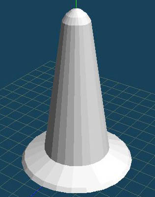
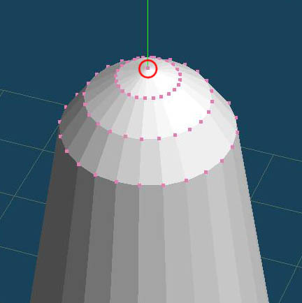
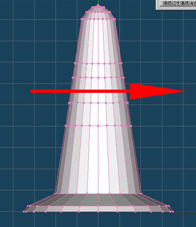

工程４
|  |
「オブジェクト」メニュー→「曲面・ミラーのフリーズ」を実行して回転体をフリーズします。 「回転体」では、オブジェクトは必ず「両面ポリゴン」という状態で生成されます。「ポリゴン｣とは点と点を結んで作成された面のことを言い、
「両面ポリゴン｣とは表と裏がある「ポリゴン｣のことを言います。 実行時まれに、すべての面が表を向かないこと（一部の面が見えなくなること）があります。このような時は「オブジェクト」メニュー→「面の方向を統一する」を実行してください。 |
工程５
|  |
工程３で「角数」に「24」と入力して実行しました。そのため回転体の中心に２４個の頂点が重複しています。（目で見て確認はできませんが） 「オブジェクト」メニュー→「近接する頂点をくっつける」を実行してください。この操作で２４個の重複した頂点は１個の頂点になります。 |
工程６
|  |
色を塗り分けるため、面を分割します。ここでは「ナイフ」コマンドを使用します。 「ナイフ」→「ナイフで面を切断」を選択します。Shiftキーを押しながら横にドラッグしてください。 同じ操作を４回繰り返して、面を分割してください。 |